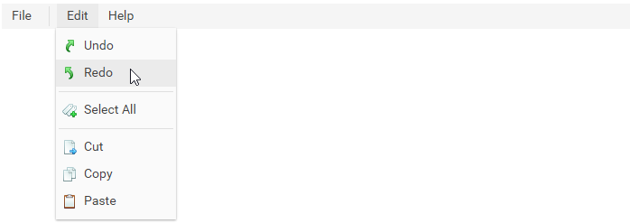

dhtmlxMenu is a component that provides an easy way to add a professional drop down menu or a contextual menu to user's projects. This component is highly customizable and supports a wide range of features. dhtmlxMenu component can be a good navigation aid to web sites, help systems, etc.

Initializing Menu on a Page |
Introduces the steps of creating Menu on a page. |
Loading Data into Menu |
Describes possible sources for Menu data loading. |
Working with Menu |
Shows the possibilities of manipulating Menu and its items, as well as describes the process of creating a context menu. |
Auxiliary Resources |
Covers common information you may need while working with Menu. |
Other |